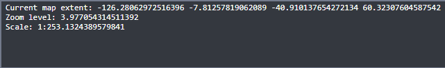

Quick Start#
MapServer Mapfiles#
The easiest way to get familiar with MapServer Studio is to open a template map ans start playing around with the Mapfile syntax. The official MapServer documentation for Mapfiles is an excellent resource, and the Introduction to the Mapfile provides a good overview.
MapServer Studio#
To get started edit the Mapfile text in the panel on the left, and hit the “Serve” button to see the changes in the view on the right.
Minimal Map#
Below is a minimal working Mapfile you can use in MapServer Studio to generate a map.
MAP
EXTENT -180 -90 180 90
PROJECTION
"init=epsg:4326"
END
LAYER
NAME "Lakes"
TYPE POLYGON
STATUS ON
CONNECTIONTYPE OGR
CONNECTION "/data/naturalearth/fgb"
DATA "ne_10m_admin_0_countries"
CLASS
STYLE
OUTLINECOLOR 50 50 50
WIDTH 1
END
END
END
END
Setting Map Extents#
When zooming and panning in the viewer you will see the location details output at the bottom of the user interface. You can copy the map extent into your Mapfile to set the initial Map extent when serving or creating the map.
Current map extent: -9243843.886040376 871650.7015713183 -5614755.111948866 3764292.59054384
Zoom level: 5.365890675741148
Scale: 1:10760627.82697778
Adding Data#
MapServer Studio is pre-configured to work with the Natural Earth datasets. To browse these datasets you can use the OGC Features API Browser. In addition data can be added from any public S3-compatible bucket.
Take the Name value for a dataset and use this in the DATA clause e.g. DATA "ne_10m_admin_0_countries"